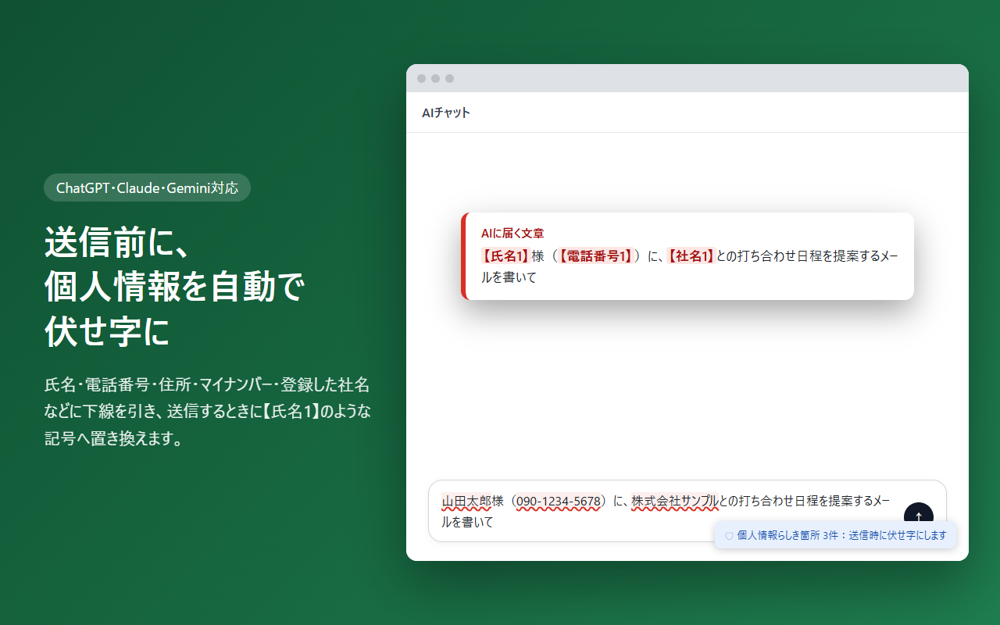
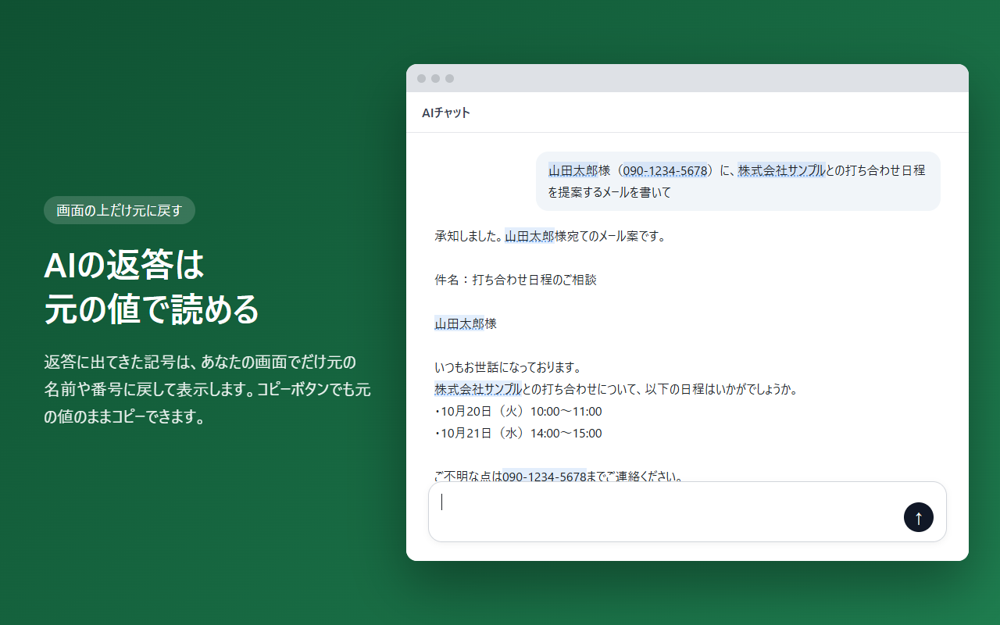

AIに送る前に、個人情報を自動で伏せ字に。
氏名・電話番号・住所・マイナンバー・社名などを、送信の直前に【氏名1】のような記号へ置き換えます。AIの返答は、あなたの画面でだけ元の値に戻して表示します。

使い方は、いつもどおり送信するだけ
- 入力する個人情報らしき箇所に下線が引かれ、画面の右下に件数が出ます。
- 送信するEnterキーか送信ボタンで送ると、記号に置き換えてから送信されます。
- 読む・コピーする返答の記号は元の値で表示されます。コピーボタンでも元の値のままです。
AIの返答は、元の値で読める
AIには「【氏名1】様」と届き、AIも記号のまま答えます。拡張機能はその記号を、あなたの画面の上でだけ「山田太郎様」に戻します。記号と元の値の対応表はブラウザのメモリにだけ置かれ、ブラウザを閉じると消えます。

見つける情報
| 種類 | 見つけ方 |
|---|---|
| マイナンバー・法人番号 | 桁数とチェックデジットで確認（ただの数字の並びは対象外） |
| クレジットカード番号 | Luhnアルゴリズムで確認 |
| 電話番号・メールアドレス・郵便番号・住所 | 全角数字やハイフンの違いも吸収して検出 |
| 氏名 | 「氏名：」「担当：」などの項目名や、「〇〇様」などの敬称から判断 |
| 登録した語 | 社名・顧客名・案件名など、自動では見つけにくい語を設定画面で登録（20語まで） |
安心して使えるように
端末の中だけで処理
開発者のサーバーを含め、外部へは一切送信しません。
広告・解析なし
アクセス解析・広告・トラッキングは入っていません。このサイトにもありません。
最小限の権限
使うのは保存機能と、対応する3つのAIサイトだけです。
対応表は自動で消える
記号と元の値の対応は、ブラウザを閉じると消えます。
ソースコード公開
中身は GitHub で誰でも確認できます。
オンオフはワンクリック
ツールバーのアイコンから、いつでも無効にできます。
正直にお伝えしたいこと
- 送信前の「うっかり」を減らす補助ツールです。すべての個人情報を確実に見つけられるわけではありません。
- ファイル・画像のアップロードや、音声入力の内容は対象外です。
- ブラウザを閉じた後に過去の会話を開くと、記号のまま表示されます。
- AIサイトの画面が変わると、一時的に動かなくなることがあります。毎日自動でチェックし、見つけしだい直します。
よくある質問
AIは記号のままで、ちゃんと答えられますか？
はい。伏せ字にしたメッセージの末尾に「記号は伏せ字にした実在の情報です」という短い注記を自動で付けるので、AIは記号を空欄と誤解せず、そのまま使って答えます。注記はあなたの画面には表示されません。設定で外すこともできます。
会社で使っても大丈夫ですか？
拡張機能そのものは外部と通信しないため、社内の情報が開発者に渡ることはありません。ただし、AIサービスの利用自体については、お勤め先の規程に従ってください。
誤って伏せ字になる語があります。
設定画面の「伏せ字にしない語」に登録すると、その語は置き換えなくなります。自社名や、公開している代表電話番号などにお使いください。
料金はかかりますか？
無料です。
Chromeウェブストアで審査中プライバシーポリシー